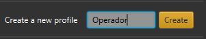
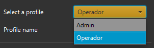
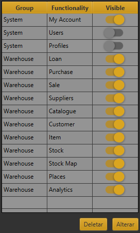
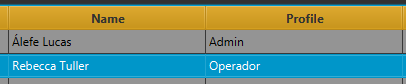

Alterando permissões de usuário
O Pyxis WMS permite gerenciar o acesso dos usuários às telas principais. O recurso que lhe permite fazer
isso é a tela "Perfis". Todo usuário tem um perfil atribuído à sua conta, podendo vários usuários possuírem o
mesmo perfil. Cada perfil tem permissões atribuídas a ele, referentes às telas principais. Para alterar os níveis
de acesso do usuário "X", crie um novo perfil na tela de perfis.

Selecione o perfil criado para altera-lo.

Selecione as permissões e clique em "Alterar".

O perfil já está criado, agora falta atribuir o perfil aos usuários desejados. Faça isso na tela "Usuários".
